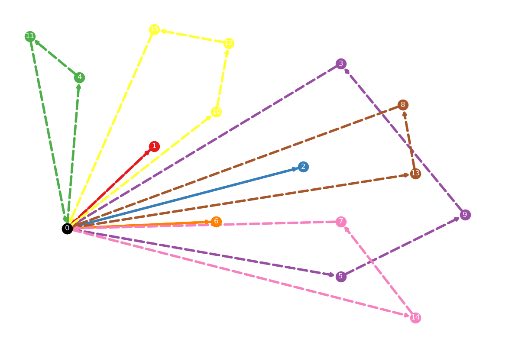
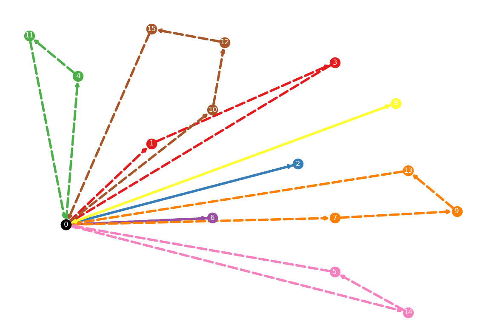

7 Capacitated Vehicle Routing Problem
The Capacitated Vehicle Routing Problem (CVRP) is a classical combinatorial optimization problem that involves finding the optimal set of routes for a fleet of vehicles to deliver goods or services to a set of customers. In the CVRP, a set of customers is given, each with a known demand and location. A fleet of vehicles, each with a limited capacity, is available to serve these customers. The problem is to find a set of routes visited by the vehicles such that each customer is visited once and only once and the total traveling distance is minimized.
We use the notation provided in Toth and Vigo (2014) to facilitate the presentation of different CVRP models. The depot, denoted as 0, serves as the starting point for transporting goods to customers in \(\mathcal{N} = {1, 2, \cdots, n}\) using a homogeneous fleet \(\mathcal{K} = {1, 2, \cdots, |\mathcal{K}|}\). Each customer in \(\mathcal{N}\) has a demand of \(q_i \geq 0\), and each vehicle has a positive capacity of \(Q > 0\). The cost of transportation, denoted by \(c_{ij}\), is incurred when a vehicle travels between \(i\) and \(j\). A vehicle’s route begins at the depot, visits some or all the customers in \(\mathcal{N}\), and then returns to the depot. The objective is to determine the optimal set of routes for the fleet to minimize the total cost of transportation.
The CVRP could be defined on a directed graph \(\mathcal{G} = (\mathcal{V}, \mathcal{A})\), where \(\mathcal{V} = \{0\} \cup \{1, 2, \cdots, n\} = \{0, 1, \cdots, n\}\), and \(\mathcal{A} = \{(i, j) | i, j \in \mathcal{V}, i \neq j\}\). Let \(S\) be a subset of \(\mathcal{V}\), that is, \(S \subseteq \mathcal{V}\). The in-arcs and out-arcs of \(S\) are defined as follows:
- \(\delta^-(S) = \{(i, j) \in \mathcal{A} | i \notin S, j \in S \}\)
- \(\delta^+(S) = \{(i, j) \in \mathcal{A} | i \in S, j \notin S \}\)
In addition, we use \(\mathcal{A}(S) = \{(i, j) \in \mathcal{A} | i \in S, j \in S \}\) to indicate all the arcs that connect nodes within \(S\).
7.1 CVRP Instances
We use the instances taken from CVRPLIB (2014) to illustrate the modeling and solving process with Google OR-Tools. CVRPLIB (2014) contains many benchmarking instances for CVRP and we use the python package vrplib to load the instance P-n16-k8.vrp and its optimal solution P-n16-k8.sol.
Let’s first create a function to visualize vehicle routes, as given below.
import networkx as nx
import numpy as np
import matplotlib as mpl
import matplotlib.pyplot as plt
def show_vehicle_routes(locations, edges):
"""draw vehicles routings
adapted from https://stackoverflow.com/a/50682819
examples:
locations = {
0: (5, 5),
1: (4, 9),
2: (6, 4),
3: (2, 6),
}
edges = [
(0, 1, {'vehicle': '0'}),
(1, 2, {'vehicle': '0'}),
(2, 0, {'vehicle': '0'}),
(0, 3, {'vehicle': '1'}),
(3, 0, {'vehicle': '1'}),
]
Args:
locations (dict): location id -> (lat, lon)
edges (list): list of edges
"""
G = nx.DiGraph()
G.add_edges_from(edges)
plt.figure(figsize=(15,10))
vehicles = set([e[2]['vehicle'] for e in edges])
num_vehicles = len(vehicles)
colors = mpl.colormaps["Set1"].colors
for v in range(num_vehicles):
temp = [e for e in edges if e[2]['vehicle'] == str(v)]
color_idx = v
if color_idx >= len(colors):
color_idx = color_idx % len(colors)
color = np.array([colors[color_idx]])
nx.draw_networkx_nodes(G,
locations,
nodelist=[x[0] for x in temp],
node_color=color)
nx.draw_networkx_edges(G,
locations,
edgelist=temp,
width=4,
edge_color=color,
style='dashed')
#let's color the node 0 in black
nx.draw_networkx_nodes(G, locations,
nodelist=[0],
node_color='k')
# labels
nx.draw_networkx_labels(G, locations,
font_color='w',
font_size=12,
font_family='sans-serif')
#print out the graph
plt.axis('off')
plt.show()Figure 7.1 shows the optimal vehicle routes for the instance P-n16-k8.vrp.
Code
# visualize the optimal solution
node_coords = instance['node_coord']
locations = {}
for idx, coord in enumerate(node_coords):
locations[idx] = (coord[0], coord[1])
routes = solution['routes']
vehicle_idx = 0
edges = []
for route in routes:
r_temp = route.copy()
r_temp.insert(0, 0)
r_temp.insert(len(r_temp), 0)
for i in range(len(r_temp) - 1):
edges.append((r_temp[i], r_temp[i + 1], {'vehicle': str(vehicle_idx)}))
vehicle_idx += 1
show_vehicle_routes(locations, edges)
7.2 Two-index Formulation - 1
This formulation was proposed by Laporte, Mercure, and Nobert (1986) and we present the formulation given in Toth and Vigo (2014). In this formulation, we define the variable \(x_{ij}\) that equals 1 if the arc \((i, j)\) is traversed by a vehicle. The complete model is given below.
\[\begin{align} \text{min.} &\quad \sum_{(i, j) \in \mathcal{A}} c_{ij} x_{ij} \label{cvrp-two-index-obj} \\ \text{s.t.} &\quad \sum_{j \in \delta^+(i)}x_{ij} = 1, \ \forall i \in \mathcal{N} \label {cvrp-two-index-cons1}\\ &\quad \sum_{i \in \delta^-(j)} x_{ij} = 1, \ \forall j \in \mathcal{N} \label{cvrp-two-index-cons2} \\ &\quad \sum_{j \in \delta^+(0)} x_{oj} = |\mathcal{K}| \label{cvrp-two-index-cons3} \\ &\quad \sum_{(i, j) \in \delta^+(S)} x_{ij} \geq r(S), \ \forall S \subseteq \mathcal{N}, S \neq \emptyset \label{cvrp-two-index-cons4} \\ &\quad x_{ij} \in \{0, 1\}, \ \forall (i, j) \in \mathcal{A} \label{cvrp-two-index-cons5} \end{align}\]
The objective function represented by equation \(\eqref{cvrp-two-index-obj}\) is to minimize the overall transportation costs. The constraints expressed in equations \(\eqref{cvrp-two-index-cons1}\) and \(\eqref{cvrp-two-index-cons2}\) work together to guarantee that each customer is visited only once, with one incoming and outgoing arc. Constraints \(\eqref{cvrp-two-index-cons3}\) ensure that all available vehicles are utilized to serve the customers. Constraints \(\eqref{cvrp-two-index-cons4}\) prevent the formation of sub-tours. Finally, the variable types are defined by the last set of constraints, which are presented in equation \(\eqref{cvrp-two-index-cons5}\).
To solve the aforementioned instance, we’ll first prepare the data for our following implementation use. Let’s first define two classes, Node and Vehicle, to represent a node in the network and the vechiles, respectively.
class Node:
"""a node is either a depot (0) or a customer
"""
def __init__(self, id, x_coord, y_coord, demand):
self._id = id
self._x_coord = x_coord
self._y_coord = y_coord
self._demand = demand
@property
def id(self): return self._id
@property
def x_coord(self): return self._x_coord
@property
def y_coord(self): return self._y_coord
@property
def demand(self): return self._demand
def __str__(self):
return f"id: {self._id},\
x_coord: {self._x_coord},\
y_coord: {self._y_coord},\
demand: {self._demand}"Now let’s define a class CvrpDataCenter to hold all the information we need later. It also has a helper function to read and parse a CVRP instance.
from typing import List
import vrplib
import re
from itertools import combinations
class CvrpDataCenter:
"""this class manages all the data for a CVRP instance
"""
def __init__(self):
self._nodes: List = None
self._vehicles: List = None
self._distance: List[List] = None
def read_cvrp_instance(self, instance_file):
"""read a given cvrp instance
Args:
instance_file (str): instance file
"""
instance = vrplib.read_instance(instance_file)
# gather nodes
nodes = []
idx = 0
for node, demand in zip(instance['node_coord'],
instance['demand']):
node = Node(id=idx,
x_coord=node[0],
y_coord=node[1],
demand=demand)
idx += 1
nodes.append(node)
# gather vehicles
comment = instance['comment']
num_vehicles = int(re.search(r'\d', comment).group())
vehicles = []
for v in range(num_vehicles):
vehicle = Vehicle(v, int(instance['capacity']))
vehicles.append(vehicle)
# gather distance matrix
distance = instance['edge_weight']
self._nodes = nodes
self._vehicles = vehicles
self._distance = distance
@property
def nodes(self): return self._nodes
@property
def vehicles(self): return self._vehicles
@property
def num_nodes(self): return len(self._nodes)
@property
def num_vehicles(self): return len(self._vehicles)
@property
def vehicle_capacity(self):
return self._vehicles[0].capacity
def distance(self, i, j, integer=False):
return round(self._distance[i][j]) \
if integer else self._distance[i][j]
def get_all_combinations(self, numbers):
combs = []
for i in range(1, len(numbers) + 1):
combs.extend(list(combinations(numbers, i)))
return combsTo implement this formulation using Google OR-Tools, we first create a CvrpDataCenter object and read in the instance P-n16-k8.vrp. Then we create a solver object with solver option SCIP to solve mixed integer programming problems.
Now let’s create the decision variable \(x_{ij}\). Note that we don’t need to create variables when \(i = j\) since there is no arc pointing to itself in the graph \(\mathcal{G}\) we defined earlier.
Then we create the objective function.
And we create the constraints \(\eqref{cvrp-two-index-cons1}\) and \(\eqref{cvrp-two-index-cons2}\).
Constraints \(\eqref{cvrp-two-index-cons3}\) are created as follows.
To create the subtour elimination constraints \(\eqref{cvrp-two-index-cons4}\), we first need to enumerate all the non-empty subset of \(\mathcal{N}\), for which we define a helper function named get_all_combinations() in the CvrpDataCenter class. In the code snippet below, we define a separate constraint for every nonempty customer set \(S\), and the right-hand side \(r(S)\) is defined as \(\lceil {q(S) / Q} \rceil\).
# create subtour elimination constraint
nodes = cvrp_data_center.nodes
vehicle_capacity = cvrp_data_center.vehicle_capacity
customer_ids = [node.id for node in nodes if node.id > 0]
node_ids = [node.id for node in nodes]
nonempty_customer_sets = cvrp_data_center.get_all_combinations(customer_ids)
for customer_set in nonempty_customer_sets:
others = set(node_ids).difference(customer_set)
expr = [var_x[i][j]
for i in customer_set
for j in others]
total_demand = sum([node.demand
for node in nodes
if node.id in set(customer_set)])
rhs = math.ceil(total_demand / vehicle_capacity)
solver.Add(solver.Sum(expr) >= rhs)Putting it all together, we have the complete program below. It can be seen from the output that the optimal solution is 450 and there are 8 routes in the identified solution.
from ortools.linear_solver import pywraplp
import numpy as np
from itertools import product
import math
# prepare instance
cvrp_data_center = CvrpDataCenter()
cvrp_data_center.read_cvrp_instance("./data/cvrp/P-n16-k8.vrp")
# instantiate solver
solver = pywraplp.Solver.CreateSolver('SCIP')
# create decision variables
num_nodes = cvrp_data_center.num_nodes
num_vehicles = cvrp_data_center.num_vehicles
var_x = np.empty((num_nodes, num_nodes), dtype=object)
for i, j in product(range(num_nodes), range(num_nodes)):
if i == j: continue
var_x[i][j] = solver.BoolVar(name="x_{i, j}")
# define objective function
obj_expr = [
cvrp_data_center.distance(i, j, integer=True) * var_x[i][j]
for i, j in product(range(num_nodes), range(num_nodes))
if i != j
]
solver.Minimize(solver.Sum(obj_expr))
# create incoming and outgoing arc constraints
for i in range(1, num_nodes):
out_arcs = [var_x[i][j] for j in range(num_nodes) if j != i]
in_arcs = [var_x[j][i] for j in range(num_nodes) if j != i]
solver.Add(solver.Sum(out_arcs) == 1)
solver.Add(solver.Sum(in_arcs) == 1)
# create fleet size constraint
expr = [var_x[0][i] for i in range(1, num_nodes)]
solver.Add(solver.Sum(expr) == num_vehicles)
# create subtour elimination constraint
nodes = cvrp_data_center.nodes
vehicle_capacity = cvrp_data_center.vehicle_capacity
customer_ids = [node.id for node in nodes if node.id > 0]
node_ids = [node.id for node in nodes]
nonempty_customer_sets = cvrp_data_center.get_all_combinations(customer_ids)
for customer_set in nonempty_customer_sets:
others = set(node_ids).difference(customer_set)
expr = [var_x[i][j]
for i in customer_set
for j in others]
total_demand = sum([node.demand
for node in nodes
if node.id in set(customer_set)])
rhs = math.ceil(total_demand / vehicle_capacity)
solver.Add(solver.Sum(expr) >= rhs)
status = solver.Solve()
if not status:
opt_obj = solver.Objective().Value()
print(f'optimal value: {opt_obj}')
opt_x = np.zeros((num_nodes, num_nodes))
for i, j in product(range(num_nodes), range(num_nodes)):
if i == j: continue
opt_x[i][j] = int(var_x[i][j].solution_value())
routes = []
for i in range(1, num_nodes):
if opt_x[0][i] == 0: continue
# new route found
route = []
route_length = 0
# add the first arc
arc_start = 0
arc_end = i
route.append((arc_start, arc_end))
route_length += cvrp_data_center.distance(arc_start,
arc_end,
integer=True)
# add remaining arcs on the route
arc_start = arc_end
while True:
for j in range(num_nodes):
if opt_x[arc_start][j] == 1:
arc_end = j
break
route.append((arc_start, arc_end))
route_length += cvrp_data_center.distance(arc_start,
arc_end,
integer=True)
if arc_end == 0: break
arc_start = arc_end
routes.append(route)
print(f'route: {route}, length: {route_length}')optimal value: 450.0
route: [(0, 1), (1, 0)], length: 28
route: [(0, 2), (2, 0)], length: 42
route: [(0, 4), (4, 11), (11, 0)], length: 57
route: [(0, 5), (5, 9), (9, 3), (3, 0)], length: 93
route: [(0, 6), (6, 0)], length: 24
route: [(0, 10), (10, 12), (12, 15), (15, 0)], length: 67
route: [(0, 13), (13, 8), (8, 0)], length: 71
route: [(0, 14), (14, 7), (7, 0)], length: 68Figure 7.2 shows the routes found by the two-index formulation. Note that the routes are different from the ones in Figure 7.1 but they have the same objective value.
Code

To facilitate the model comparison in following steps, we’ll wrap the above program into a dedicated class Cvrp1.
from ortools.linear_solver import pywraplp
from itertools import product
import numpy as np
import math
class Cvrp1:
"""solve the cvrp model using the two index formulation
"""
def __init__(self, cvrp_data_center: CvrpDataCenter):
self._data_center: CvrpDataCenter = cvrp_data_center
self._solver = pywraplp.Solver.CreateSolver('SCIP')
self._var_x = None
self._opt_obj = None
self._opt_x = None
self._opt_routes = None
def read_instance(self, instance_file):
self._data_center.read_cvrp_instance(instance_file)
def build_model(self):
self._create_variables()
self._create_objective()
self._create_constr_flow()
self._create_constr_fleet()
self._create_constr_subtour()
def optimize(self):
status = self._solver.Solve()
if not status:
self._retrieve_opt_solution()
self._retrieve_opt_routes()
def _create_variables(self):
num_nodes = self._data_center.num_nodes
self._var_x = np.empty((num_nodes, num_nodes), dtype=object)
for i, j in product(range(num_nodes), range(num_nodes)):
if i == j: continue
self._var_x[i][j] = self._solver.BoolVar(name="x_{i, j}")
def _create_objective(self):
num_nodes = self._data_center.num_nodes
obj_expr = [
self._data_center.distance(i, j, integer=True) *
self._var_x[i][j]
for i, j in product(range(num_nodes), range(num_nodes))
if i != j
]
self._solver.Minimize(self._solver.Sum(obj_expr))
def _create_constr_flow(self):
# create incoming and outgoing arc constraints
num_nodes = self._data_center.num_nodes
for i in range(1, num_nodes):
out_arcs = [self._var_x[i][j] for j in range(num_nodes) if j != i]
in_arcs = [self._var_x[j][i] for j in range(num_nodes) if j != i]
self._solver.Add(self._solver.Sum(out_arcs) == 1)
self._solver.Add(self._solver.Sum(in_arcs) == 1)
def _create_constr_fleet(self):
# create fleet size constraint
num_nodes = self._data_center.num_nodes
num_vehicles = self._data_center.num_vehicles
expr = [self._var_x[0][i] for i in range(1, num_nodes)]
self._solver.Add(self._solver.Sum(expr) == num_vehicles)
def _create_constr_subtour(self):
# create subtour elimination constraint
nodes = self._data_center.nodes
vehicle_capacity = self._data_center.vehicle_capacity
customer_ids = [node.id for node in nodes if node.id > 0]
node_ids = [node.id for node in nodes]
nonempty_customer_sets = self._data_center.get_all_combinations(customer_ids)
for customer_set in nonempty_customer_sets:
others = set(node_ids).difference(customer_set)
expr = [self._var_x[i][j]
for i in customer_set
for j in others]
total_demand = sum([node.demand
for node in nodes
if node.id in set(customer_set)])
rhs = math.ceil(total_demand / vehicle_capacity)
self._solver.Add(self._solver.Sum(expr) >= rhs)
print(f"No. subtour elimination constraints: {len(nonempty_customer_sets)}")
def show_model_summary(self):
print(f"No. of variables: {self._solver.NumVariables()}")
print(f"No. of constraints: {self._solver.NumConstraints()}")
def _retrieve_opt_solution(self):
self._opt_obj = self._solver.Objective().Value()
print(f'optimal value: {self._opt_obj}')
num_nodes = self._data_center.num_nodes
self._opt_x = np.zeros((num_nodes, num_nodes))
for i, j in product(range(num_nodes), range(num_nodes)):
if i == j: continue
self._opt_x[i][j] = int(self._var_x[i][j].solution_value())
def _retrieve_opt_routes(self):
num_nodes = self._data_center.num_nodes
self._routes = []
for i in range(1, num_nodes):
if self._opt_x[0][i] == 0: continue
# new route found
route = []
route_length = 0
# add the first arc
arc_start = 0
arc_end = i
route.append((arc_start, arc_end))
route_length += self._data_center\
.distance(arc_start,
arc_end,
integer=True)
# add remaining arcs on the route
arc_start = arc_end
while True:
for j in range(num_nodes):
if self._opt_x[arc_start][j] == 1:
arc_end = j
break
route.append((arc_start, arc_end))
route_length += self._data_center\
.distance(arc_start,
arc_end,
integer=True)
if arc_end == 0: break
arc_start = arc_end
self._routes.append(route)
print(f'route: {route}, length: {route_length}')The code below validates that the same optimal solution is obtained using this object-oriented approach.
cvrp1 = Cvrp1(CvrpDataCenter())
cvrp1.read_instance("./data/cvrp/P-n16-k8.vrp")
cvrp1.build_model()
cvrp1.show_model_summary()
cvrp1.optimize()No. subtour elimination constraints: 32767
No. of variables: 240
No. of constraints: 32798
optimal value: 450.0
route: [(0, 1), (1, 0)], length: 28
route: [(0, 2), (2, 0)], length: 42
route: [(0, 4), (4, 11), (11, 0)], length: 57
route: [(0, 5), (5, 9), (9, 3), (3, 0)], length: 93
route: [(0, 6), (6, 0)], length: 24
route: [(0, 10), (10, 12), (12, 15), (15, 0)], length: 67
route: [(0, 13), (13, 8), (8, 0)], length: 71
route: [(0, 14), (14, 7), (7, 0)], length: 68It can be seen from the model output that there are a total of 32798 constraints, out of which 32767 are subtour elimination constraints, even for such a small instance with only 15 customers. In the next section, we will present another two index formulation to handle this exponential number of constraints.
7.3 Two-index Formulation - 2
This formulation is based on the MTZ-model introduced by Miller, Tucker, and Zemlin (1960) for the TSP. To eliminate subtours, a new variable \(u_i\) is defined for every node \(i \in \mathcal{N}\):
- \(u_i\): the total demands distributed by any vehicle when it arrives at node \(i\)
\[\begin{align} \text{min.} &\quad \sum_{(i, j) \in \mathcal{A}} c_{ij} x_{ij} \label{cvrp2-obj} \\ \text{s.t.} &\quad \sum_{j \in \delta^+(i)}x_{ij} = 1, \ \forall i \in \mathcal{N} \label {cvrp2-cons1}\\ &\quad \sum_{i \in \delta^-(j)} x_{ij} = 1, \ \forall j \in \mathcal{N} \label{cvrp2-cons2} \\ &\quad \sum_{j \in \delta^+(0)} x_{oj} = |\mathcal{K}| \label{cvrp2-cons3} \\ &\quad u_i \leq u_j - q_j + Q(1 - x_{ij}), \ \forall (i, j) \in \mathcal{A}, i, j \in \mathcal{N} \label{cvrp2-cons4}\\ &\quad q_i \leq u_i \leq Q, \ \forall i \in \mathcal{N} \label{cvrp2-cons5} \\ &\quad x_{ij} \in \{0, 1\}, \ \forall (i, j) \in \mathcal{A} \label{cvrp2-cons6} \end{align}\]
from ortools.linear_solver import pywraplp
from itertools import product
import numpy as np
import math
class Cvrp2:
"""solve the cvrp model using the two index formulation
"""
def __init__(self, cvrp_data_center: CvrpDataCenter):
self._data_center: CvrpDataCenter = cvrp_data_center
self._solver = pywraplp.Solver.CreateSolver('SCIP')
self._var_x = None
self._var_u = None
self._opt_obj = None
self._opt_x = None
self._opt_routes = None
def read_instance(self, instance_file):
self._data_center.read_cvrp_instance(instance_file)
def build_model(self):
self._create_variables()
self._create_objective()
self._create_constr_flow()
self._create_constr_fleet()
self._create_constr_subtour()
def optimize(self):
status = self._solver.Solve()
if not status:
self._retrieve_opt_solution()
self._retrieve_opt_routes()
def _create_variables(self):
num_nodes = self._data_center.num_nodes
self._var_x = np.empty((num_nodes, num_nodes), dtype=object)
for i, j in product(range(num_nodes), range(num_nodes)):
if i == j: continue
self._var_x[i][j] = self._solver.BoolVar(name="x_{i, j}")
self._var_u = np.empty(num_nodes, dtype=object)
nodes = self._data_center.nodes
vehicle_capacity = float(self._data_center.vehicle_capacity)
for node in nodes:
if node.id == 0: continue
self._var_u[node.id] = self._solver.NumVar(
lb=float(node.demand),
ub=vehicle_capacity,
name='v')
def _create_objective(self):
num_nodes = self._data_center.num_nodes
obj_expr = [
self._data_center.distance(i, j, integer=True) *
self._var_x[i][j]
for i, j in product(range(num_nodes), range(num_nodes))
if i != j
]
self._solver.Minimize(self._solver.Sum(obj_expr))
def _create_constr_flow(self):
# create incoming and outgoing arc constraints
num_nodes = self._data_center.num_nodes
for i in range(1, num_nodes):
out_arcs = [self._var_x[i][j] for j in range(num_nodes) if j != i]
in_arcs = [self._var_x[j][i] for j in range(num_nodes) if j != i]
self._solver.Add(self._solver.Sum(out_arcs) == 1)
self._solver.Add(self._solver.Sum(in_arcs) == 1)
def _create_constr_fleet(self):
# create fleet size constraint
num_nodes = self._data_center.num_nodes
num_vehicles = self._data_center.num_vehicles
expr = [self._var_x[0][i] for i in range(1, num_nodes)]
self._solver.Add(self._solver.Sum(expr) == num_vehicles)
def _create_constr_subtour(self):
# create subtour elimination constraint
constraints = []
nodes = self._data_center.nodes
vehicle_capacity = self._data_center.vehicle_capacity
for ni, nj in product(nodes, nodes):
if ni.id == 0 or nj.id == 0: continue
if ni.id == nj.id: continue
constr = self._solver.Add(
self._var_u[ni.id] <=
self._var_u[nj.id] -
nj.demand +
vehicle_capacity * (
1 - self._var_x[ni.id][nj.id]
)
)
constraints.append(constr)
print(f"No. subtour elimination constraints: {len(constraints)}")
def show_model_summary(self):
print(f"No. of variables: {self._solver.NumVariables()}")
print(f"No. of constraints: {self._solver.NumConstraints()}")
def _retrieve_opt_solution(self):
self._opt_obj = self._solver.Objective().Value()
print(f'optimal value: {self._opt_obj}')
num_nodes = self._data_center.num_nodes
self._opt_x = np.zeros((num_nodes, num_nodes))
for i, j in product(range(num_nodes), range(num_nodes)):
if i == j: continue
self._opt_x[i][j] = int(self._var_x[i][j].solution_value())
def _retrieve_opt_routes(self):
num_nodes = self._data_center.num_nodes
self._routes = []
for i in range(1, num_nodes):
if self._opt_x[0][i] == 0: continue
# new route found
route = []
route_length = 0
# add the first arc
arc_start = 0
arc_end = i
route.append((arc_start, arc_end))
route_length += self._data_center\
.distance(arc_start,
arc_end,
integer=True)
# add remaining arcs on the route
arc_start = arc_end
while True:
for j in range(num_nodes):
if self._opt_x[arc_start][j] == 1:
arc_end = j
break
route.append((arc_start, arc_end))
route_length += self._data_center\
.distance(arc_start,
arc_end,
integer=True)
if arc_end == 0: break
arc_start = arc_end
self._routes.append(route)
print(f'route: {route}, length: {route_length}')
def show_opt_routes(self):
nodes = self._data_center.nodes
locations = {
node.id: (node.x_coord, node.y_coord)
for node in nodes
}
edges = []
vehicle_idx = 0
for route in self._routes:
for arc in route:
edges.append((arc[0], arc[1], {'vehicle': str(vehicle_idx)}))
vehicle_idx += 1
edges
show_vehicle_routes(locations, edges)cvrp2 = Cvrp2(CvrpDataCenter())
cvrp2.read_instance("./data/cvrp/P-n16-k8.vrp")
cvrp2.build_model()
cvrp2.show_model_summary()
cvrp2.optimize()
cvrp2.show_opt_routes()No. subtour elimination constraints: 210
No. of variables: 255
No. of constraints: 241
optimal value: 450.0
route: [(0, 1), (1, 3), (3, 0)], length: 66
route: [(0, 2), (2, 0)], length: 42
route: [(0, 4), (4, 11), (11, 0)], length: 57
route: [(0, 6), (6, 0)], length: 24
route: [(0, 7), (7, 9), (9, 13), (13, 0)], length: 68
route: [(0, 8), (8, 0)], length: 64
route: [(0, 10), (10, 12), (12, 15), (15, 0)], length: 67
route: [(0, 14), (14, 5), (5, 0)], length: 62
7.4 Three-index Formulation
This formulation is also known as the MTZ-formulation as a new set of constraints initially proposed for traveling salesman problem (Miller, Tucker, and Zemlin (1960)) is used to eliminate subtours.
We define the following variables in this formualation:
- \(x_{ijk}\): a binary variable that equals 1 when the vehicle \(k\) visits arc \((i, j) \in \mathcal{A}\), 0 otherwise
- \(y_{ik}\): a binary variable that equals 1 if node \(i\) is visited by vehicle \(k\), 0 otherwise
- \(u_{ik}\): a continuous variable that represents the demands delivered by vehicle \(k\) when arriving at node \(i\)
\[\begin{align} \text{min.} &\quad \sum_{k \in \mathcal{K}} \sum_{(i, j) \in \mathcal{A}} c_{ij} x_{ijk} \label{cvrp3-obj} \\ \text{s.t.} &\quad \sum_{k \in \mathcal{K}} y_{ik} = 1, \ \forall i \in \mathcal{N} \label{cvrp3-cons1} \\ &\quad \sum_{j \in \mathcal{N}}x_{0jk} - \sum_{j \in \mathcal{N}}x_{j0k} = 1, \ \forall k \in \mathcal{K} \label{cvrp3-cons2} \\ &\quad \sum_{j \in \mathcal{N}}x_{ijk} - \sum_{j \in \mathcal{N}}x_{jik} = 0, \ \forall i \in \mathcal{N}, k \in \mathcal{K} \label{cvrp3-cons3} \\ &\quad y_{ik} = \sum_{j \in \mathcal{V}, j \neq i} x_{ijk}, \ \forall i \in \mathcal{N}, k \in \mathcal{K} \label{cvrp3-cons4} \\ &\quad y_{0k} = \sum_{j \in \mathcal{N}} x_{j0k}, \ \forall k \in \mathcal{K} \label{cvrp3-cons5} \\ &\quad u_{ik} \leq u_{jk} - q_j + Q(1 - x_{ijk}), \ \forall (i, j) \in \mathcal{A}, k \in \mathcal{K} \label{cvrp3-cons6} \\ &\quad q_i \leq u_{ik} \leq Q, \ \forall i \in \mathcal{N}, k \in \mathcal{K} \label{cvrp-cons7}\\ &\quad x_{ijk} \in \{0, 1\}, \ \forall (i, j) \in \mathcal{A}, k \in \mathcal{K} \label{cvrp3-cons8} \\ &\quad y_{ik} \in \{0, 1\}, \ \forall i \in \mathcal{V}, k \in \mathcal{K} \label{cvrp3-cons9} \\ &\quad u_{ik} \geq 0, \ \forall i \in \mathcal{N}, k \in \mathcal{K} \label{cvrp3-cons10} \end{align}\]
from ortools.linear_solver import pywraplp
from itertools import product
import numpy as np
import math
class Cvrp3:
"""solve the cvrp model using the two index formulation
"""
def __init__(self, cvrp_data_center: CvrpDataCenter):
self._data_center: CvrpDataCenter = cvrp_data_center
self._solver = pywraplp.Solver.CreateSolver('SCIP')
self._var_x = None
self._var_y = None
self._var_u = None
self._opt_obj = None
self._opt_x = None
self._opt_routes = None
def read_instance(self, instance_file):
self._data_center.read_cvrp_instance(instance_file)
def build_model(self):
self._create_variables()
self._create_objective()
self._create_constr_customer_must_be_visited()
self._create_constr_flow()
self._create_constr_fleet()
self._create_constr_subtour()
def optimize(self):
status = self._solver.Solve()
if not status:
self._retrieve_opt_solution()
self._retrieve_opt_routes()
else:
print(f"status={status}")
def _create_variables(self):
num_nodes = self._data_center.num_nodes
num_vehicles = self._data_center.num_vehicles
self._var_x = np.empty((num_vehicles, num_nodes, num_nodes), dtype=object)
for k, i, j in product(range(num_vehicles), range(num_nodes), range(num_nodes)):
if i == j: continue
self._var_x[k][i][j] = self._solver.BoolVar(name=f"x_{i, j}")
self._var_y = np.empty((num_vehicles, num_nodes), dtype=object)
for k, i in product(range(num_vehicles), range(num_nodes)):
self._var_y[k][i] = self._solver.BoolVar(name=f'y_{k, i}')
infinity = self._solver.Infinity()
self._var_u = np.empty((num_vehicles, num_nodes), dtype=object)
for k, i in product(range(num_vehicles), range(1, num_nodes)):
self._var_u[k][i] = self._solver.NumVar(0, infinity, name=f'u_{i, k}')
def _create_objective(self):
num_vehicles = self._data_center.num_vehicles
num_nodes = self._data_center.num_nodes
obj_expr = [
self._data_center.distance(i, j, integer=True) *
self._var_x[k][i][j]
for k, i, j in product(range(num_vehicles), range(num_nodes), range(num_nodes))
if i != j
]
self._solver.Minimize(self._solver.Sum(obj_expr))
def _create_constr_customer_must_be_visited(self):
num_vehicles = self._data_center.num_vehicles
num_nodes = self._data_center.num_nodes
for i in range(1, num_nodes):
expr = [self._var_y[k][i] for k in range(num_vehicles)]
self._solver.Add(self._solver.Sum(expr) == 1)
def _create_constr_flow(self):
# create incoming and outgoing arc constraints
num_vehicles = self._data_center.num_vehicles
num_nodes = self._data_center.num_nodes
for k in range(num_vehicles):
expr1 = [self._var_x[k][0][j] for j in range(1, num_nodes)]
expr2 = [self._var_x[k][j][0] for j in range(1, num_nodes)]
self._solver.Add(self._solver.Sum(expr1) -
self._solver.Sum(expr2) == 1)
for k, i in product(range(num_vehicles), range(1, num_nodes)):
expr1 = [self._var_x[k][i][j] for j in range(0, num_nodes) if j != i]
expr2 = [self._var_x[k][j][i] for j in range(0, num_nodes) if j != i]
self._solver.Add(self._solver.Sum(expr1) -
self._solver.Sum(expr2) == 0)
def _create_constr_fleet(self):
# create fleet size constraint
num_vehicles = self._data_center.num_vehicles
num_nodes = self._data_center.num_nodes
for k in range(num_vehicles):
expr = [self._var_x[k][j][0] for j in range(1, num_nodes)]
self._solver.Add(self._solver.Sum(expr) == self._var_y[k][0])
for k, i in product(range(num_vehicles), range(1, num_nodes)):
expr = [self._var_x[k][i][j] for j in range(num_nodes) if j != i]
self._solver.Add(self._solver.Sum(expr) == self._var_y[k][i])
def _create_constr_subtour(self):
# create subtour elimination constraint
constraints = []
nodes = self._data_center.nodes
vehicle_capacity = self._data_center.vehicle_capacity
num_vehicles = self._data_center.num_vehicles
num_nodes = self._data_center.num_nodes
for k, ni in product(range(num_vehicles), nodes):
if ni.id == 0: continue
self._solver.Add(self._var_u[k][ni.id] >= ni.demand)
self._solver.Add(self._var_u[k][ni.id] <= vehicle_capacity)
for k, ni, nj in product(range(num_vehicles), nodes, nodes):
if ni.id == 0 or nj.id == 0: continue
if ni.id == nj.id: continue
constr = self._solver.Add(
self._var_u[k][ni.id] <=
self._var_u[k][nj.id] -
nj.demand +
vehicle_capacity * (
1 - self._var_x[k][ni.id][nj.id]
)
)
constraints.append(constr)
print(f"No. subtour elimination constraints: {len(constraints)}")
def show_model_summary(self):
print(f"No. of variables: {self._solver.NumVariables()}")
print(f"No. of constraints: {self._solver.NumConstraints()}")
def _retrieve_opt_solution(self):
self._opt_obj = self._solver.Objective().Value()
print(f'optimal value: {self._opt_obj}')
num_nodes = self._data_center.num_nodes
num_vehicles = self._data_center.num_vehicles
self._opt_x = np.zeros((num_vehicles, num_nodes, num_nodes))
for k, i, j in product(range(num_vehicles), range(num_nodes), range(num_nodes)):
if i == j: continue
self._opt_x[k][i][j] = int(self._var_x[k][i][j].solution_value())
def _retrieve_opt_routes(self):
num_nodes = self._data_center.num_nodes
num_vehicles = self._data_center.num_vehicles
self._routes = []
for k in range(num_vehicles):
route = []
for i in range(1, num_nodes):
if self._opt_x[k][0][i] == 0: continue
# new route found
route_length = 0
# add the first arc
arc_start = 0
arc_end = i
route.append((arc_start, arc_end))
route_length += self._data_center\
.distance(arc_start,
arc_end,
integer=True)
# add remaining arcs on the route
arc_start = arc_end
while True:
for j in range(num_nodes):
if self._opt_x[k][arc_start][j] == 1:
arc_end = j
break
route.append((arc_start, arc_end))
route_length += self._data_center\
.distance(arc_start,
arc_end,
integer=True)
if arc_end == 0: break
arc_start = arc_end
self._routes.append(route)
print(f'route: {route}, length: {route_length}')
break
def show_opt_routes(self):
nodes = self._data_center.nodes
locations = {
node.id: (node.x_coord, node.y_coord)
for node in nodes
}
edges = []
vehicle_idx = 0
for route in self._routes:
for arc in route:
edges.append((arc[0], arc[1], {'vehicle': str(vehicle_idx)}))
vehicle_idx += 1
edges
show_vehicle_routes(locations, edges)cvrp3 = Cvrp3(CvrpDataCenter())
cvrp3.read_instance("./data/cvrp/P-n16-k8.vrp")
cvrp3.build_model()
cvrp3.show_model_summary()
cvrp3.optimize()
cvrp3.show_opt_routes()No. subtour elimination constraints: 1680
No. of variables: 2168
No. of constraints: 2191
status=2AttributeError: 'Cvrp3' object has no attribute '_routes'